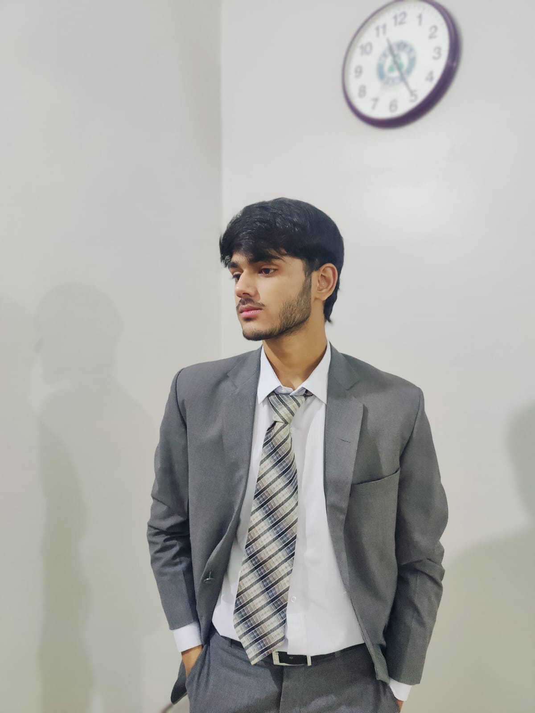
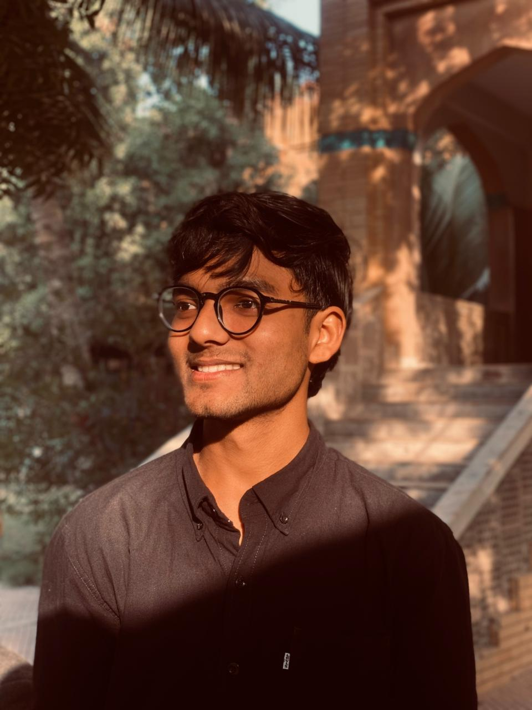

About FAST Transportation
FAST Transportation is dedicated to providing safe, reliable, and timely transport services for all students and staff across the university campus. Our fleet of modern buses, professional drivers, and well-planned routes ensure that you reach your destination comfortably and on time.
Our Mission
To offer dependable and affordable campus transportation, maintain safety as our top priority, and continuously improve services through modern technology and customer feedback.
Route Partners

Mr. Nadeem
Head of Nadeem Transport Services
Mr. Jadoon
Head of Jadoon Transport Services
Website Founders

Sarim Bin Azeem
Sarim is an 18-year-old BSCS student at FAST National University. He contributed significantly to the website’s development and visual design. His work focused on creating clean and user-friendly interfaces, improving layout structure, and ensuring that the website remained responsive across devices. Sarim also implemented key JavaScript features such as the dark mode system and interactive UI components, helping enhance the overall user experience.

Khizar Sheikh
Khizar is a BSCS student at FAST National University with a passion for software development and structured system design. He contributed on gathering the route's information and making the respective routes pages. His analytical mindset and organized approach helped build a strong technical foundation for the FAST Transportation project.